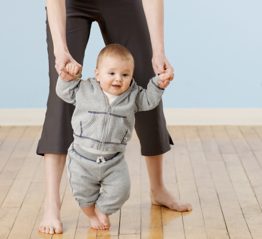
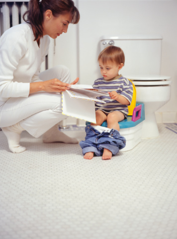
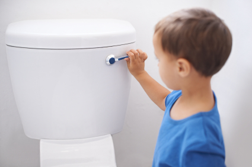

El control de esfínter
El control de esfínter, en un principio no es algo que dependa del deseo del niño, ni tampoco de un “adiestramiento” llevado a cabo por los adultos. El control es un logro, una conquista que debe realizar el propio niño.
|  |
|  |
¿Cómo aprendemos a hacer pipí?
El control de esfínter suele ser para los niños y los padres un periodo de cierta tensión, esta tensión se agudiza para los padres cuando el niño tarda en lograrlo y para el niño cuando tiene que soportar exigencias y reproches cuando no responde a las expectativas de los padres.
|
|
En la adquisición de este control intervienen varios procesos: | |
Es necesario que se produzca una maduración a nivel fisiológico. Los músculos más importantes que intervienen en el proceso son los esfínter, normalmente la capacidad en el niño para poder controlar voluntariamente estos músculos sucede entre los 24 y los 30 meses como promedio. Debemos saber que las diferencias en esto entre los niños puede ser muy grande. | |
|
Debe existir un proceso de enseñanza supervisado, que ayude al niño a discriminar y distinguir las sensaciones que le indican que necesita hacer “pipí o popó” y entender cuál es el momento y el lugar adecuado para hacerlo. | 
|
¿Cómo sabemos si se ha alcanzado el nivel madurativo necesario?
A los dos años, la mayoría de los niños comienzan a prestar atención durante más tiempo en actividades tranquilas, pueden sentarse a escuchar un cuento, jugar o esperar la cena. La capacidad de sentarse y de atender es muy importante para obtener éxito en el uso del orinal. Es en este momento evolutivo cuando los niños empiezan a interesarse por el esquema corporal. Se produce durante el segundo año de vida del niño un avance cualitativo, donde se produce una autonomía motora, el acceso a lo simbólico y la consolidación del lenguaje. |
Hay algunas manifestaciones de los niños que nos indican que ya tiene la madurez necesaria para lograrlo:
- Cuando el niño comienza a permanecer seco en el día, durante dos o tres horas seguidas.
- Cuando notamos que el niño hace una pausa breve durante el juego para hacer “pipi o popó”. Esto revela que conoce las sensaciones de su cuerpo que posteriormente le indicarán que es hora de hacer pipi o popó.
- El niño imita muchas conductas adultas, como cepillarse los dientes o usar un tenedor. Está aprendiendo a vestirse y desvestirse y trata de hacer cosas sin ayuda.
- Debe ser capaz de permanecer sentado al menos 2 o 3 minutos mientras le hablan o leen.
- Que sea capaz de prestar atención mientras le contamos un cuento cortito.
- Que distinga las partes de su cuerpo.
- Comprender y seguir ciertas normas sencillas como “siéntate”, “tócate la nariz”... etc.
- Empezar a comprender la ubicación espacio-tiempo, dentro-fuera.
- Tener equilibrio suficiente para poder sentarse y levantarse solo del orinal.
- Que el niño sea capaz de expresar verbalmente o con gestos su deseo de hacer “pipi o popó”, y que busque al adulto si se siente manchado.
- Se siente incómodo con pañales, intenta quitárselos o prefiere estar sin ellos.
|
Como se puede trabajar en casa
- Sensibilizar al niño hacia el tema del control: enseñarle el orinal, explicar para qué sirve, crear también en casa toda esa motivación inicial que explicamos antes.
- Responder con una actitud positiva, no podemos regañar al niño, ni con palabras ni con gestos. En caso de accidente debemos responder con serenidad y de manera “aséptica”.
- Tener paciencia y ser asertivos, sin que exista una carga emocional para nosotros y para el niño.
- Saber combinar la ternura con la firmeza; con la ternura se actúa con paciencia y cariño. La firmeza requiere una actuación congruente; y ambos son indispensables para arraigar un hábito en un niño.
- No compararlo nunca con otros niños, ni con los hermanos.
- El mayor premio es la aprobación y la atención de los padres.
- Regularidad: Una rutina organizada presenta muchas ventajas durante este periodo. El trabajo con un horario que se ajuste a las necesidades de predictibilidad del niño ayudará a que se alcance el objetivo deseado. Si un niño es impredecible tendremos que buscar algún patrón de conducta (como hacer pipi después de la siesta) y reforzarlo para que el niño pueda adaptarse al aprendizaje. Por ello la necesidad de establecer rutinas.
- Debemos tener en cuenta la atención que a esta edad tienen los niños: al igual que empiezan a tener capacidad para concentrarse en usar el orinal, también pueden prestarle gran atención a un rompecabezas, a unas construcciones o a cualquier otro juguete.
- Una vez que se involucra en una actividad que le gusta, es difícil interrumpirlo y si está haciendo algo que le interesa puede hacerse pipí encima sin ni siquiera notarlo. Para el niño nada tiene tanta importancia como lo que está haciendo en ese momento. Es importante reconocer esto y no culpar al niño por tener “accidentes”. Debemos intentar sentar al niño en el orinal en momentos en que no esté demasiado entretenido con ninguna actividad.
|
Fases del programa de intervención
- Debemos elegir un orinal de tamaño adecuado para el niño, es importante que se sienta cómodo. Podemos pegar una calcomanía que a él le guste, que la pegue él, para que identifique el orinal como algo suyo.
- Llevaremos algún muñeco favorito del niño@ para que lo mire mientras se sienta, también podemos dejar que el muñeco pruebe a sentarse. Podemos contarle lo contenta que se siente la muñeca por poder sentarse en el orinal. Los niños aprenden mucho más observando que si les decimos qué deben hacer.
- Sentaremos al niño en el orinal (vestido) unos minutos mientras le leemos un cuento, le cantamos una canción o simplemente le hablamos. Y le explicamos que más adelante podrá usarlo cuando tenga que hacer pipí o popó. (Si muestra una resistencia absoluta a sentarse mejor que no insistamos, pues podemos entrar en una lucha de poder. Esperaremos unos días para volver a intentarlo).
- Después de un tiempo (una semana o más) en que veamos que es capaz de sentarse y aguantar unos minutos sentado, probaremos a sentarlo en un momento en que esté desnudo, por ejemplo antes del baño. Realizándolo una o dos veces al día durante otra semana. A estas alturas el niño ya se sentirá cómodo con el orinal, como algo que le resulta familiar y que forma parte de su rutina diaria.
- Entonces podemos empezar a sentarle a intervalos más regulares. Siempre debemos escoger un momento tranquilo. Los mejores momentos son después de las comidas, a media mañana, justo después de una siesta o antes o después del baño. Cualquiera que sea la hora que elijamos el niño debe sentir que esta actividad es sencilla y placentera, no debemos transformarla en la más excitante o importante del día.
- Es bueno mantener este plan de horarios regulares para sentarse en el orinal, pero sin ejercer presión sobre el niño. Debemos hacer que esta práctica sea breve y siempre escogiendo un momento en que el niño no esté demasiado concentrado en otra cosa.
- Podemos elegir los momentos en los que nota que su hijo@ hace pipi. Si se despierta seco de la siesta o por la mañana, es muy probable que necesite “hacer” pronto. Después de la comida, la sensación de tener el estómago lleno desencadena un reflejo natural que lo puede hacer ir al baño.
- Recordar que cuando queramos que se siente no preguntarle ¿quieres usar el orinal? Un niño de dos años con frecuencia contesta a todas las preguntas con un “no”. Es mejor decirle “ahora vamos a usar el orinal” o “ahora es un buen momento para usar el orinal mientras te leo un cuento”. Una vez que ha comenzado la enseñanza del control de esfínter será mejor decirle “vamos a hacer del baño”, que preguntarle “¿quieres hacer?”. Ya que a esta edad afirman su independencia diciendo “no”, incluso cuando parecen querer decir sí, y haciendo cualquier cosa excepto lo que sus padres acababan de pedirle.
- En algún punto de este proceso, el niño hará “pipí” en el orinal, es lo que hemos estado esperando y debemos reaccionar con alegría, pero de una manera normal, pues demasiados festejos pueden abrumar al niño.
- Cuando el niño ha obtenido un logro es bueno que al terminar mire lo que hay en el orinal. Si no hace nada también es bueno mirar el orinal para que diferencie cuando hay y cuando no hay.
- Cada momento en que permanece sentado debe seguir siendo breve, si el niño quiere permanecer sentado más de 5 minutos, no tenemos por qué sacarlo, pero no debemos motivarlo a quedarse sentado mucho tiempo, mediante la lectura o la charla, no debemos olvidar que el momento del orinal es para hacer pipí, no es un momento de socializar.
- Debemos seguir con esta etapa hasta que el niño use el orinal varias veces por día. Debemos ayudarle vistiéndolo con ropas sencillas y fáciles de bajar rápidamente. Si el niño tiene que luchar con botones, cremalleras antes o después de ir al baño, puede desalentarle a intentar ir al baño.
- Pueden pasar días, antes de que un niño empiece a hacer pipí en el orinal. Es por eso que es tan importante que el tiempo en que está sentado sea breve, para no generar apatía en el niñ@.
- Una vez que le quitemos los pañales del todo, tenemos que pensar que será definitivo y por lo tanto estar seguros de que es el momento adecuado, probablemente necesitaremos recordarle que debe sentarse en el orinal o en el sanitario a intervalos regulares y frecuentes. Es probable que tengamos que recordárselo cada media hora o cada hora aproximadamente. Cada vez que tenga éxito en el orinal, le haremos unos elogios sencillos.
Lo más importante es actuar con paciencia, pensar que el niño está en proceso de aprendizaje y que no podemos ejercer presión sobre él/ella.
|